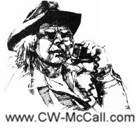
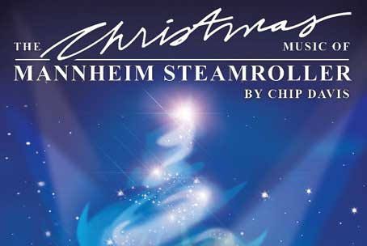
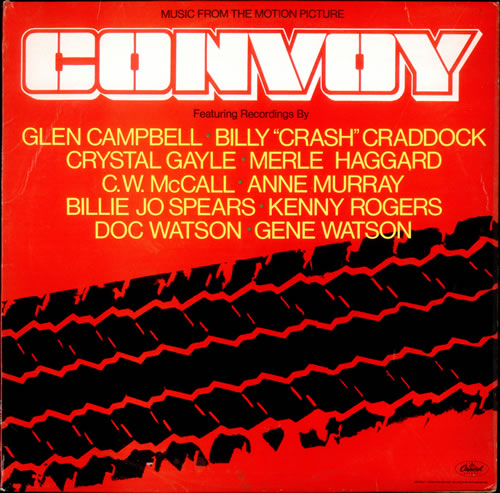

Mike Douglas Show (August 1976) |
Rich Little Variety Show (February 1976) |
(Pop Goes The Country) |
 |
Side I * Convoy (new version) — C.W. McCall 3:57 * Lucille — Kenny Rogers 3:39 * Cowboys Don’t Get Lucky All The Time — Gene Watson 2:35 * Don’t It Make My Brown Eyes Blue — Crystal Gayle 2:35 * I Cheated On A Good Woman’s Love — Billy "Crash" Craddock 2:37 Side II * Okie From Muskogee — Merle Haggard 2:41 * Southern Nights — Glen Campbell 2:58 * Blanket On The Ground — Billie Jo Spears 3:32 * Keep On The Sunny Side — Doc Watson 2:06 * Walk Right Back — Anne Murray 2:41 |
| Where
Are They Now: Artists From The Soundtrack * Bill Fries (aka C.W. McCall) Bill with composer Louis "Chip" Davis released a total of 6 albums, which can be looked up at Ed Floden's www.CW-McCall.com. Bill Fries retired in Ouray, Colorado with his wife Renee and two children. He served as Mayor of Ouray, CO in the mid 1980's. Bill Fries was inducted in to the IOWA Rock-n-Roll Hall of Fame in September 2009. With the success of the single original 1976 hit Convoy, Chip Davis would create Mannheim Steamroller company produced composed and Christmas music. * Glen Campbell, 76. Was inducted in the Country Music Hall of Fame in 2005. Most known for hit 1975 song "Rhinestone Cowboy"...(His song "Southern Nights" is among those that listed but not featured) * Billy "Crash" Craddock, 73, (Official Website). His 1978 song "I cheated on a good woman's love" (vaguely heard in the movie Convoy) would be one of his last Top Ten hits. He was inducted in North Carolina Music Hall of Fame in 2011. * Crystle Gale, 61, (Official Website). Is as legendary as her older sister Loretta Lynn. Her classic Don't It Make My Brown Eyes Blue won her 1978 Grammy for Best Country Song by female (was at least among a few classics that could be heard in the movie)...She is the Kentucky Music Hall of Fame and Hollywood Walk of Fame. * Merle Haggard, 75...(Official Website) His classic "Okie From Muskogee" is probably the second standout music heard in the movie, next to only Convoy itself. He has been honored with several BMI Awards and Life Time Achievement Award in December 2010. * Anne Murray, 67, (Official Website) (Although her song "Walk Right Back" is not a feature in the movie soundtrack) Her name and work has achieved major cognition in Country, Pop and Adult Contemporary music. She was honored with inductions in the Canadian County Music Hall of Fame, Juno Hall of Fame, Songwriters Hall of Fame, Country Music Hall of Fame Walkway in Nashville, Hollywood Walk of Fame in Los Angeles and Canadian Walk of Fame in Toronto. Billboard Music ranked her #10 in 50 Biggest Adult Comtemporary Artists. * Billie Jo Spears, 74 (Jan 14, 1937 - Dec 14, 2011)...Her song "Blanket on the Ground" (not standout song in the soundtrack) was her only number 1 hit in 1975. It gained a bit of controversy and turned down by Nashville producers being seen as possibly "adultery" or sexual innuedo. She gained some success with other artists and their music...She passed away of Cancer in 2011. * Kenny Rogers, 74, (Official Website) (among his many hit songs, "Lucille", ironically is also among the soundtracks listed music that is not a stand out song). He is among the most legendary names in Country Music History before and after Convoy. * Doc Watson, 89 (Mar 3, 1923 - May 29, 2012) A long time Country music and Blue Grass performer, most known as his Guitar playing which he called "Old Hoss". (Keep on the Sunny Side; among the least noted music on the soundtrack) was a short single from an album called Doc Watson Memories in 1975)..He was inducted in the North Carolina Music Hall of Fame in 2010. He passed away from underlying medical conditions in 2012. |
|